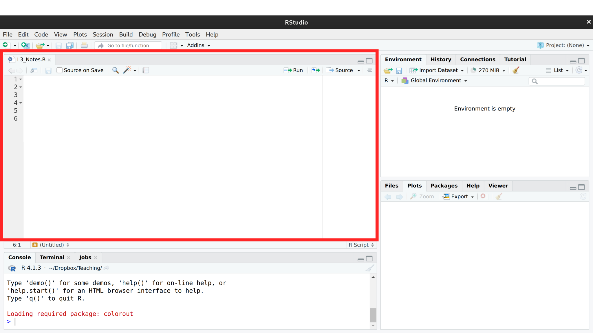

Code
sudo dnf install 'dnf-command(copr)'
sudo dnf copr enable iucar/RStudio
sudo dnf install RStudio-desktopThis chapter walks through the basics of working in R: installing the software, writing your first commands, saving them in scripts, and building up the objects you will use throughout the book. We start with simple arithmetic, then move to vectors and matrices, write your first function, and finish with loops and logical comparisons. The pace is gentle on purpose so that the rest of the book can move quickly.
You will program your statistical analysis in R. My main sell to you is that “R programming” is in your own self-interest, not mine.
Next quarter’s sales report, or the same table with one more year of data, is the same analysis run again. Done by hand, it costs another afternoon. Written as a script, you simply swap the data file and rerun it. The same code that summarizes 100 observations summarizes one million. Asking an AI assistant to simply do the analysis may get you different results when you simply want to repeat an analysis. Instead, you can use AI to help you generate and check your reproducible scripts.
Most of this book is spent on methods that don’t fit into a cell formula. We build confidence intervals by resampling the data thousands of times. We test hypotheses by simulating what the data would look like if there were no effect. We also follow good visualization conventions, such as showing 2D data without unnecessary 3D effects. See Tufte (2001) and https://clauswilke.com/dataviz/no-3d.html.
Every calculation is recorded, rather than hidden in a sequence of clicks that nobody wrote down. This is what lets you, a colleague, or a boss find the exact step where a number went wrong. A spreadsheet can display a plausible number even when the calculation behind it is wrong.
None of these were hard problems. They were ordinary mistakes that went undetected. Recording and rerunning the steps makes mistakes easier to find. See https://retractionwatch.com/ and https://econjwatch.org/ for more examples of what happens when academics don’t check their work. Search for the “worst Excel errors” and note the frequency they arise from copy/paste via the “point-and-click” approach.
The underlying skill is turning a vague question, such as “are our west-coast customers different?”, into a sequence of explicit and checkable steps. That skill carries over to any job where somebody has to defend a number.
We program with R because it is particularly good for both introductory statistics and later use in academia and industry. It is free on any machine, and it stays free after you graduate and after you leave whatever employer paid for your other software.
We will work in R through a second piece of software, RStudio. R performs the analysis while RStudio provides the workspace for writing code, inspecting data, and viewing results. RStudio is a popular choice in academia and business.
Excel is useful for data entry and a quick inspection, while R is stronger for work that must be updated, checked, explained, or scaled. Think about what your future employers want and do some of your own research to best understand how much to invest.
Install in two steps
For Fedora (linux) users, note that you need to first enable the repo and then install
sudo dnf install 'dnf-command(copr)'
sudo dnf copr enable iucar/RStudio
sudo dnf install RStudio-desktopMake sure you have the latest version of R and RStudio for class. If not, then reinstall.
RStudio is perhaps the easiest to get going with. (There are other GUI’s.)
In RStudio, there are 4 panes. If you do not see 4, click “file > new file > R script” on the top left of the toolbar.

The top left pane is where you write your code. For example, type
1+1The pane below is where your code is executed. Keep your mouse on the same line as your code, and then click “Run”. You should see
> 1+1
[1] 2If you click “Run” again, you should see that same output printed again.
As we proceed, you can see both my source code and output like this:
1 + 1
## [1] 2You can use + to add any numbers. Try \(2+2\) and \(3+3\). First execute each one-at-a-time. Then highlight/run them both together.
Throughout this textbook, there are special boxes for especially important statistical examples.
To understand each chunk of code:
E.g., Use the following code to see if the empty space matters
(2 + 7)^3 / 10
## [1] 72.9You can create “variables” that store values. For example,
x <- 1 # <- stores the value 1 in a variable named x
x + 1 # R replaces x with its stored value
## [1] 2x <- 23 #Another example
x + 1
## [1] 24y <- x + 1 #Another example
y
## [1] 24Also note that your variable names do not matter technically, but they should be informative to help avoid common mistakes.
x_plus_1 <- x + 1 #less confusing
y_times_2 <- x + 1 #more confusingYou will make many mistakes. Here are some of the most common ones to look out for.
# Mistake 1: spelling and spacing
X + 1 # notice that R is sensitive to capitalization (x is not X)
## Error:
## ! object 'X' not found
Y < - 43 # notice that < - is not <-
## Error:
## ! object 'Y' not found
Y + 1 # notice that Y was not actually created above, even if you thought it was
## Error:
## ! object 'Y' not found
# Mistake 2: half-completed code
x + y +
x_plus_y_plus_z <- x + y + z +
x
## Error:
## ! object 'z' not found
# Seeing '+' in the bottom console? press 'Escape' and try againAsk your peers or AI to check your code and error messages if you cannot figure out the issue.
Note that there are often many ways to accomplish the same goal
x + 2 + 3
## [1] 28
sum(x,2,3) # sum() is a built-in function that adds its inputs
## [1] 28You can always ask R for help
?sum # put ? before a function name to open its help pageDesktop/ECON_XXXX/CodeAs you work through the material, make sure to both execute and save your scripts.
Add lots of commentary to your scripts. Name your scripts systematically.
Before you can analyze data in R, you need to know what shapes the data can take.
Each shape suits a different kind of dataset: scalars hold single numbers (e.g., you total income for the year), vectors hold one variable across observations (e.g., the income of each person in class), and matrices hold two or more variables across observations (e.g., the income and education level of every person in class). Vectors are probably your most common object in R, but we will start with scalars.
Make your first scalar
x <- 2 # a single number is a scalar
x # typing an object's name prints its value
## [1] 2Perform simple calculations and see how R is doing the math for you
x + 2
## [1] 4
x*2 # Perform and print a simple calculation
## [1] 4
(x+1)^2 # Perform and print a simple calculation
## [1] 9
x + NA # often used for missing values
## [1] NANow change x, predict what will happen, then re-run the code.
Make your first vector The name x_hat will identify sample values throughout the book.
x_hat <- c(0, 1, 3, 10, 6) # c() combines values into a vector
x_hat
## [1] 0 1 3 10 6
x_hat[2] # square brackets extract the 2nd element
## [1] 1
# Arithmetic applies to each entry of x_hat
x_hat + 2
## [1] 2 3 5 12 8
x_hat*2
## [1] 0 2 6 20 12
x_hat^2
## [1] 0 1 9 100 36Apply mathematical calculations elementwise
x_hat+x_hat
## [1] 0 2 6 20 12
x_hat*x_hat
## [1] 0 1 9 100 36
x_hat^x_hat
## [1] 1.0000e+00 1.0000e+00 2.7000e+01 1.0000e+10 4.6656e+04In R, scalars are treated as a vector with one element.
c(1)
## [1] 1Matrices are also common objects
# Two vectors of the same length
x1_hat <- c(1, 4, 9)
x2_hat <- c(3, 0, 2)
# Stack them as rows (cbind() would stack them as columns)
x_mat <- rbind(x1_hat, x2_hat)
x_mat
## [,1] [,2] [,3]
## x1_hat 1 4 9
## x2_hat 3 0 2
x_mat[2, ] # row 2: leave the column slot empty
## [1] 3 0 2
x_mat[ , 2] # column 2: leave the row slot empty
## x1_hat x2_hat
## 4 0
x_mat[2, 2] # one entry: give both row and column
## x2_hat
## 0There are elementwise calculations
x_mat+2
## [,1] [,2] [,3]
## x1_hat 3 6 11
## x2_hat 5 2 4
x_mat*2
## [,1] [,2] [,3]
## x1_hat 2 8 18
## x2_hat 6 0 4
x_mat^2
## [,1] [,2] [,3]
## x1_hat 1 16 81
## x2_hat 9 0 4
x_mat + x_mat
## [,1] [,2] [,3]
## x1_hat 2 8 18
## x2_hat 6 0 4
x_mat * x_mat
## [,1] [,2] [,3]
## x1_hat 1 16 81
## x2_hat 9 0 4A function is a named recipe that takes input objects, performs a calculation, and returns an output.
Perhaps the most common function we will use is summation. You can see exactly what a function does with ?.
x_hat
## [1] 0 1 3 10 6
sum(x_hat) # adds the entries of a vector
## [1] 20
# ?sum # delete the first # to open the help page
mean(x_hat)
## [1] 4
max(x_hat)
## [1] 10Summing an indicator counts how many observations satisfy the condition. For example, \(\sum_{i=1}^{n}\mathbf{1}\left(\hat{x}_{i}=x\right)\) counts the number of observations equal to \(x\). In R, 1*(x_hat == 3) computes \(\mathbf{1}(\hat{x}_{i}=3)\) for each entry: the comparison gives TRUE or FALSE, and multiplying by 1 turns these into \(1\) and \(0\).
1*(x_hat == 3) # 1 if the entry equals 3, 0 otherwise
## [1] 0 0 1 0 0
sum(x_hat == 3) # how many entries equal 3
## [1] 1
mean(x_hat == 3) # proportion of entries that equal 3
## [1] 0.2Sometimes, we will use vectors that are entirely ordered.
x_hat
## [1] 0 1 3 10 6
order(x_hat)
## [1] 1 2 3 5 4
x_hat[order(x_hat)]
## [1] 0 1 3 6 10
sort(x_hat)
## [1] 0 1 3 6 10We can also make ordered vectors with functions.
seq(1, 7, by=1) #same as 1:7
## [1] 1 2 3 4 5 6 7
seq(1, 7, by=0.5)
## [1] 1.0 1.5 2.0 2.5 3.0 3.5 4.0 4.5 5.0 5.5 6.0 6.5 7.0Sometimes the same calculation must be performed on many inputs, with each result depending on the previous one or stored alongside the others.
Loops are useful when each iteration depends on the previous one (recursion) or when you want to perform a sequence of operations whose order matters; for purely elementwise calculations, vectorized arithmetic on a single vector is usually faster and cleaner.
Applying the same function over and over again
# Example 1: simple division
x_hat <- rep(NA, 3) # pre-allocate NAs to hold the results
x_hat
## [1] NA NA NA
for(i in seq(1, 3)){ # i takes the values 1, 2, 3 in turn
x_hat[i] <- i/2 # fill the i-th entry on each pass
}
x_hat # now filled in
## [1] 0.5 1.0 1.5
# Example 2: using existing data
x_hat <- c(1, 3, 9, 2)
y_hat <- rep(NA, length(x_hat))
for(i in seq(1, 4) ){
y_hat[i] <- x_hat[i] + 1
}
y_hat
## [1] 2 4 10 3
#Example 3: recursion
x_hat <- rep(NA, 4)
x_hat[1] <- 1
for(i in seq(2, 4) ){
x_hat[i] <- x_hat[i-1]^2
}
x_hat
## [1] 1 1 1 1Functions are useful for any calculation you intend to reuse: define the recipe once, and a single edit to the recipe propagates to every call. Naming the calculation also makes scripts easier to read, since a well-chosen function name documents what the code is doing.
add_two <- function(input) { # input is a placeholder name
output <- input + 2 # output exists only inside the function
return(output) # hand the result back to the caller
}
x_hat <- c(0, 1, 3, 10, 6)
add_two(input=x_hat) # add_two(x_hat) works the same
## [1] 2 3 5 12 8Common mistakes:
print(input)
print(output)
# These are not available globally, only locally (inside of the function)
# Double check typos
y_hat < - add_two(Input=X_hat)
# Seeing '+' in the bottom console
# often means you forgot to close the function with '}'
# click the bottom left panel, press 'Escape', and try again in the top left panel
add_two <- function(input_vector) {
output_vector <- input_vector + 2
return(output_vector)
x_hat <- c(0, 1, 3, 10, 6)
add_two(x_hat)There are many different functions. Many of which functions have defaults.
add_scalar <- function(input_vector1, input_scalar2) {
output_vector <- input_vector1 + input_scalar2
return(output_vector)
}
add_scalar(x_hat, 3)
## [1] 3 4 6 13 9
add_scalar(x_hat, 4)
## [1] 4 5 7 14 10
add_scalar3 <- function(input_vector1, input_scalar2=3) {
output_vector <- input_vector1 + input_scalar2
return(output_vector)
}
add_scalar3(x_hat)
## [1] 3 4 6 13 9
add_scalar3(x_hat, 4)
## [1] 4 5 7 14 10Calculations that are either TRUE or FALSE
x_hat <- c(1, 2, 3, NA) # NA marks a missing value
x_hat == 2 # TRUE or FALSE for each entry
## [1] FALSE TRUE FALSE NA
any(x_hat==2) # TRUE if at least one entry is TRUE
## [1] TRUE
all(x_hat==2) # TRUE only if every entry is TRUE
## [1] FALSE
2 %in% x_hat # does 2 appear anywhere in x_hat?
## [1] TRUE
is.na(x_hat) # flags the missing entries
## [1] FALSE FALSE FALSE TRUEThe & and | commands are logical calculations that compare vectors to the left and right.
x_hat <- c(1, 2, 3, NA)
x_hat < 2
## [1] TRUE FALSE FALSE NA
x_hat >= 1
## [1] TRUE TRUE TRUE NA
(x_hat >= 1) & (x_hat < 2)
## [1] TRUE FALSE FALSE NA
(x_hat >= 1) | (x_hat < 2)
## [1] TRUE TRUE TRUE NAYou can apply functions to all matrix elements
x1_hat <- c(1, 4, 10)
x2_hat <- c(3, 0, 2)
x_mat <- rbind(x1_hat, x2_hat)
x_mat
## [,1] [,2] [,3]
## x1_hat 1 4 10
## x2_hat 3 0 2
sum(x_mat) # adds every entry, not just one row or column
## [1] 20You can apply functions to each row or column of a matrix
# Row sums
y_row <- apply(x_mat, 1, sum) # the 1 applies sum() to each row
y_row
## x1_hat x2_hat
## 15 5
#check row sums are correct
sum(x_mat[1, ])
## [1] 15
sum(x_mat[2, ])
## [1] 5# Column sums
y_col <- apply(x_mat, 2, sum)
y_col
## [1] 4 4 12
#check column sums are correct: DIYAn AI assistant is a normal part of writing code now, and this book suggests one order for using one: you attempt the task first, and the assistant then evaluates what you produced. That order is what keeps you able to tell whether the output is right, which is most of what this book is about. Exercise 1 of every chapter, including this one, walks a script you already wrote through an eight-step review.
The full workflow, along with the prompts, the notes on what to upload, and a worked example of catching an assistant in a confident mistake, is in Working with AI.
Comment the script you wrote for this chapter, then restart R and check that it runs from a clean session, then check the script with AI as explained in Working with AI. Write three sentences from memory on the main statistical idea of this chapter, and ask the assistant what is wrong, vague, or missing. Finish with your own questions about whatever you found hardest.
Explain the difference between replicable and reproducible research. Why is programming your analysis in R better for reproducibility than a point-and-click approach?
Let x_hat <- c(2, 5, 8, 3, 7). Without running the code, predict the output of sum(x_hat) / length(x_hat), then verify in R. Next, use sort(x_hat) and extract the second element of the sorted vector with bracket indexing.
Write a function called square_plus that takes a vector and a scalar as inputs, squares each element of the vector, and then adds the scalar. Test it on x_hat <- c(1, 4, 9) with a scalar of 5. Confirm your result by computing the answer manually.
This chapter introduced the R environment, the three basic objects (scalars, vectors, matrices), and the tools to manipulate them: functions and loops. The p_hat loop in the Must Know box computes proportions in loop and applies it to x_hat <- c(0, 1, 3, 10, 6) data for \(x~\text{in}~\{1,2,3\}\).
Comments
You should add comments to your codes, and you do this with hashtags. For example
Code
The comments in this chapter say what each line does, because the syntax is new to you. In your own scripts, comments are most useful when they say why a line is there; see Code Conventions for examples.
Now try some other mathematical operations
Code
Now try some more complex examples
Code